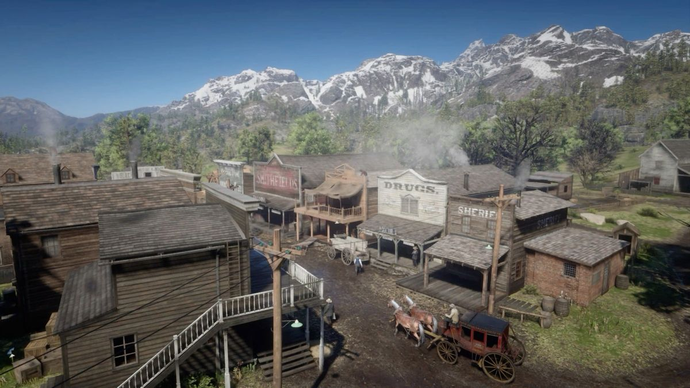
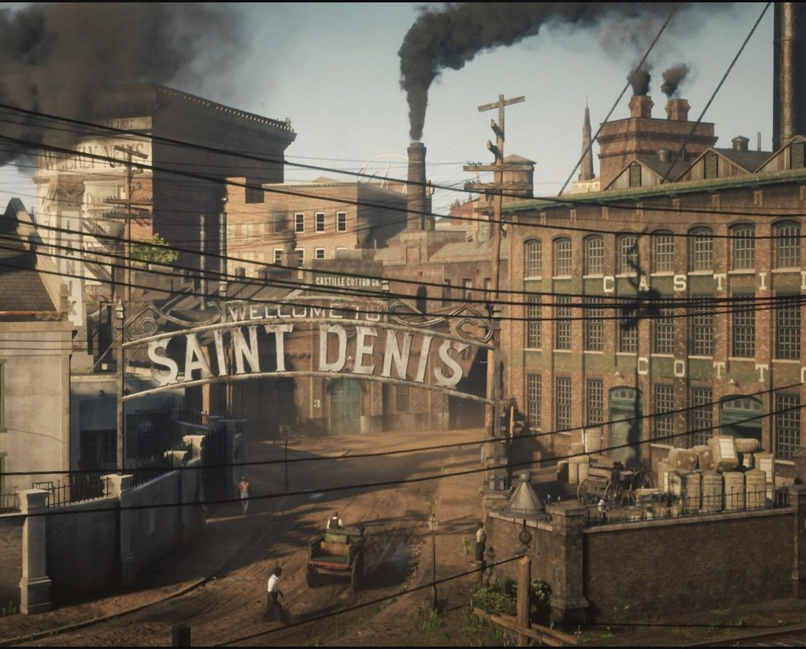
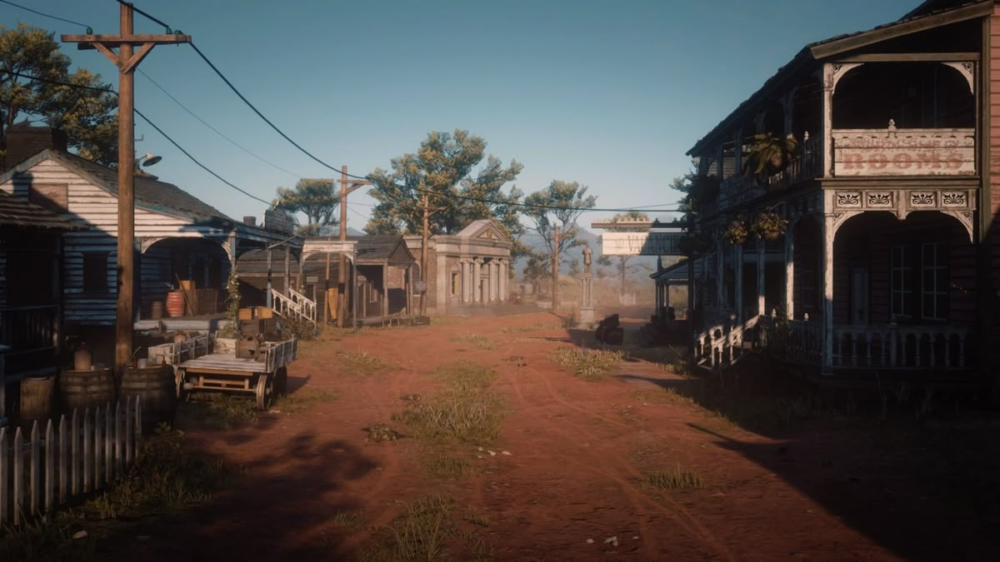
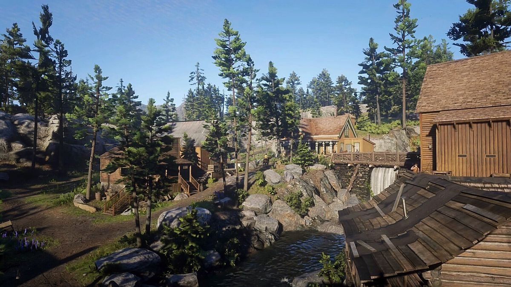
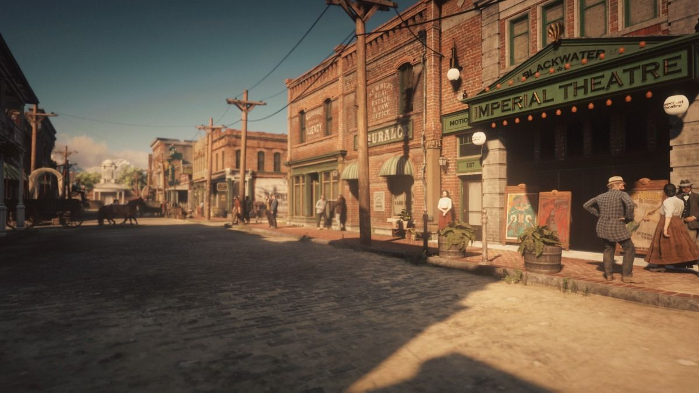

Introduction
Red Dead Redemption 2 is an open-world action-adventure game developed by Rockstar Games and released in
2018. It takes place in 1899, near the end of the Wild West era in the United States.
The game gives you a huge, detailed world where you can do missions, hunt animals, explore towns, or just
ride around. It’s not only about action, it also feels like a simulation where your choices and behavior
matter.
Story
The story follows the Van der Linde Gang, a group of outlaws on the run after a failed robbery in Blackwater. As the world becomes more modern, with stronger law enforcement and growing cities, their way of life starts to fall apart.
The main character is Arthur Morgan, one of the gang’s most trusted members. He works closely with Dutch and handles many of the important jobs.
What makes the story interesting is that Arthur isn’t just a typical outlaw. Over time, he begins to question the gang, Dutch’s decisions, and his own actions. Depending on how you play, he can change a lot as a person.
The story is more slow-paced and emotional than most games. It focuses a lot on relationships, loyalty, and how the gang slowly falls apart.
Important Places
Valentine
A small, rough western town. Many early missions happen here. It’s full of saloons, fights, and that classic cowboy atmosphere.

Saint Denis
A large, modern city inspired by places like New Orleans. There are trams, wealthy citizens, and a strong police presence.

Rhodes
A quieter southern town, but with hidden conflicts between powerful families. The story here becomes more complex and tense.

Strawberry
A smaller town in the mountains. It feels cleaner and more modern compared to other places.

Blackwater
The place where everything goes wrong. The failed robbery there is the reason the gang is on the run in the first place. You hear about it early on before fully experiencing its importance later.
